Мясорубока М780
Мясорубка BORK M780 – шедевр коллекции уникальной бытовой техники BORK. За стильный и элегантный внешний вид, она удостоена престижной международной награды IF Design Awards.
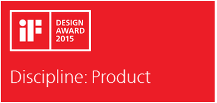Технические особенности
- Интеллектуальный автореверс
- Система крепления SMART LOCK
- Металлический редуктор
- Низкий уровень шума
- 3 скорости работы
- Энергоэффективный двигатель
- Возможность выбора языков в меню
Шнек с 4-мя витками
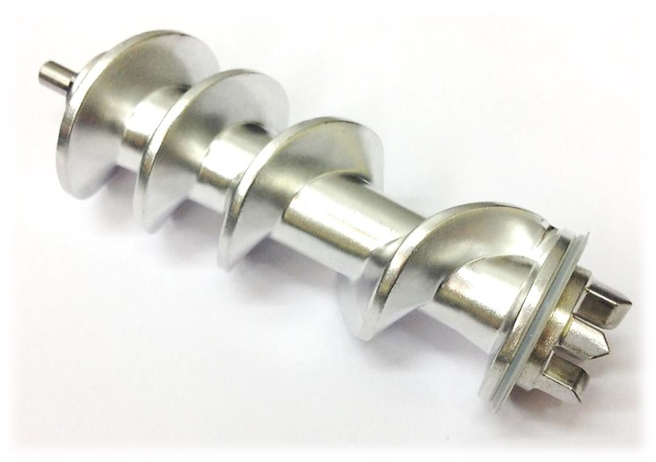Для равномерного, плотного распределения и сохранения сочности продукта мясорубка BORK M780 оснащена шнеком с увеличенным до 4-х количеством витков.
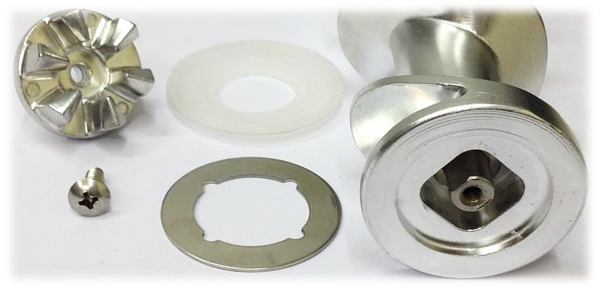Переходники шнека и мясорубки имеют специальные фаски, что обеспечивает простоту сборки одним движением. Силиконовая прокладка предотвращает попадание жидкости в корпус мясорубки, для увеличения надежности шайба выполнена из металла.
Болт из нерж. стали надежно фиксируется в стальном сердечнике шнека.
Ножи мясорубки BORK M780
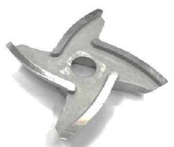Нож из сверхпрочной легированной стали (SUS 420J2) плотно прилегает к решетке, обеспечивая качественную обработку мяса. Нож не окисляется и не требует систематической заточки.
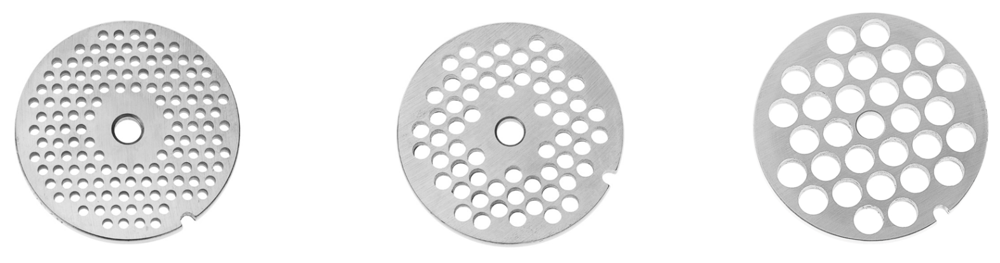3 решетки для фарша из нержавеющей стали позволяют готовить самые разнообразные блюда, от рубленого бифштекса до нежнейшего паштета.
Металлический лоток и увеличенная загрузочная часть
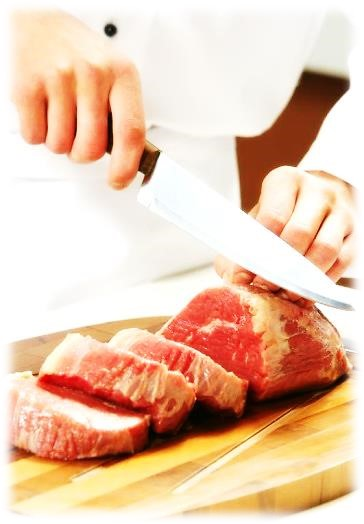Загрузочная часть для мяса имеет квадратное сечение и увеличенный размер (47х47 мм), что позволяет сократить время на подготовку и переработку мяса.
Металлический лоток для мяса крепко и надёжно фиксируется к загрузочной части мясорубки.
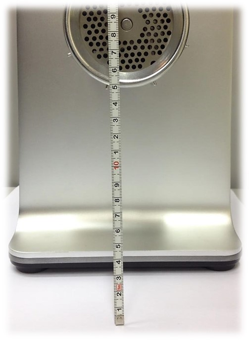Большое расстояние от столешницы до гайки крепежа решётки (14,8 см) и вылет от корпуса мясорубки (10 см) обеспечивают возможность использования большой посуды для приготовленного фарша.
Управление и индикация
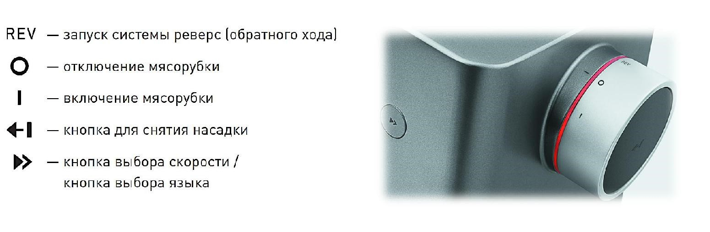
Индикация при подключении мясорубки к электросети.
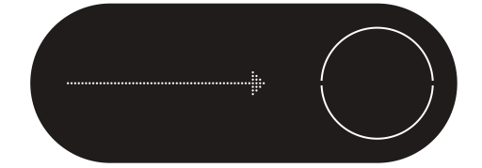Данная индикация отображается, если насадка не установлена в корпус мясорубки, или установлена не до полной фиксации.
1 скорость
2 скорость
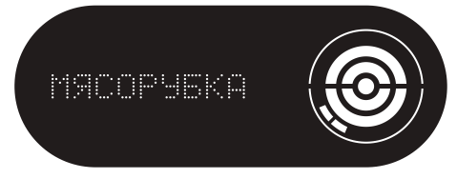3 скорость
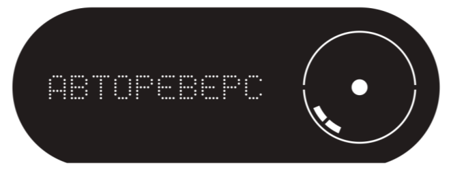Функция АВТОРЕВЕРС срабатывает автоматически, если в процессе работы мясорубки шнек перестает вращаться. АВТОРЕВЕРС срабатывает 3 раза.
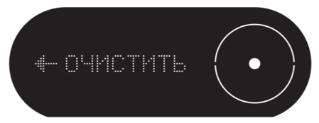Если после включения функции АВТОРЕВЕРС засор не будет устранен, то мясорубка остановится и на дисплее отобразится данная индикация.

После 3-х минут ожидания, мясорубка автоматически переключится в энергосберегающий режим, уменьшится яркость дисплея.
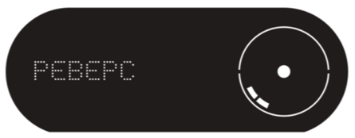Индикация при принудительном включении реверса.
Интеллектуальный автореверс
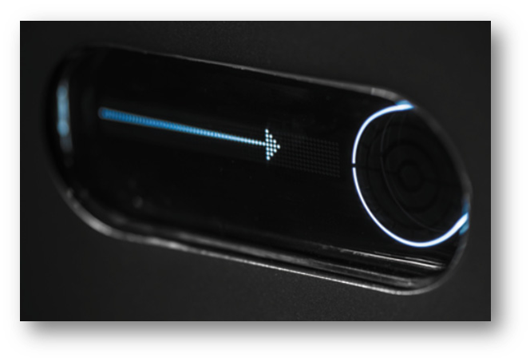Первая на рынке мясорубка, которая автоматически запускает функцию реверса при возникновении трудностей с переработкой мяса. Это не только исключает необходимость делать это вручную, но и надежно защищает двигатель от поломки. Данная система включает в себя датчик нагрузки и контролируется микропроцессором.
Система крепления SMART LOCK
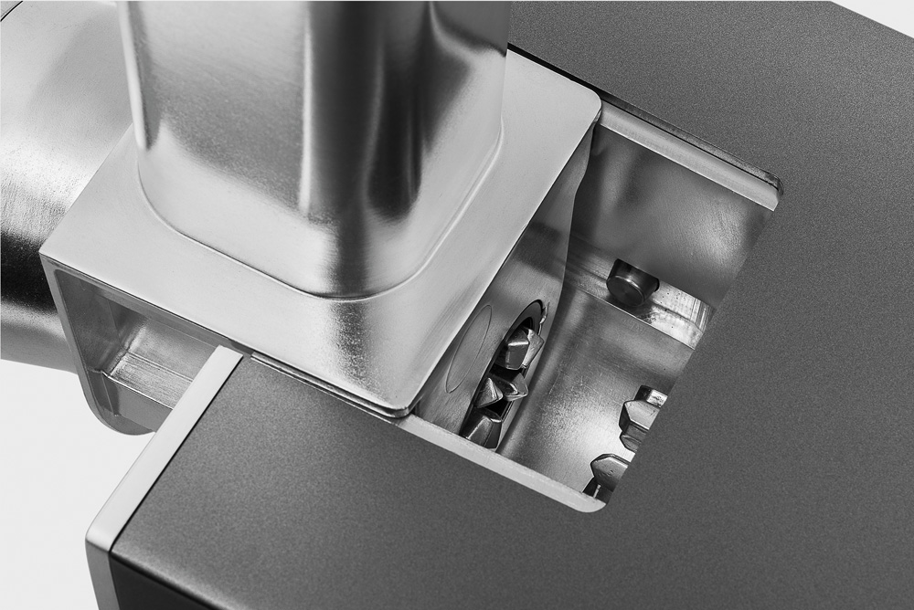Особенность конструкции обеспечивает отсутствие люфта и вибрации при работе: после сборки блока он одним нажатием надежно устанавливается в основание и блокируется фиксаторами. Электромагнитный датчик не позволит устройству включиться до установки рабочего блока. Металлическое соединение шнека с редуктором обеспечивает высокую надежность.
Металлический планетарный редуктор
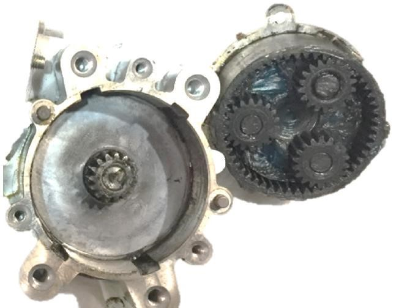Редуктор мясорубки BORK M780 выполнен из металла, что позволило поднять на новый уровень показатели надёжность и обеспечить долговечность использования.
Закрытый корпус редуктора обеспечивает постоянную смазку шестерней и снижение уровня шума.
3 скорости работы
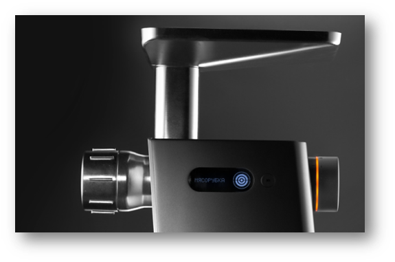Впервые мясорубка имеет 3 скорости, для обработки разных продуктов в зависимости от сочности.
Рекомендации:
- птица, рыба, ягоды,
- свинина, индейка,
- говядина, баранина, мясо дичи.
Для поддержания заданной скорости используется датчик оборотов и микропроцессор.
Энергоэффективный DC двигатель
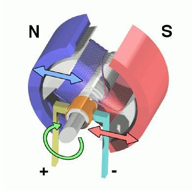Благодаря использованию DC двигателя (постоянного тока) мясорубка обладает большей производительностью при меньшей потребляемой мощности. До 2.5 кг фарша в минуту при 350 Вт.
Низкий уровень шума
Особенностью DC двигателя является низкий уровень шума (˂70 дб), что позволяет пользоваться устройством, не беспокоя окружающих.
Аргументы для продаж
- Интеллектуальный автореверс
- Уникальная система крепления SMART LOCK
- Простота сборки
- Металлическое соединение шнека с редуктором
- 4 витка шнека
- Энергоэффективный двигатель
- Низкий уровень шума
- Металлический планетарный редуктор
- 3 скорости работы
- Электронная стабилизация частоты оборотов
- Электронная защита от перегрузки
- Вентиляция двигателя
- Увеличенная загрузочная часть
- Металлический лоток для мяса
- Алюминиевый корпус
- Сверхпрочный нож из легированной стали
- З решетки из нерж. стали
- Использование большой посуды
- Информативный дисплей
- Возможность выбора языка
- Отсек для смотки шнура
- Энергосберегающий режим
- Стильный современный дизайн
Технические характеристики
Мощность: 2200 Вт
Номинальная мощность: 350 Вт
Напряжение: 220-240 В
Материал корпуса: нержавеющая сталь
Цвет: нержавеющая сталь
Срок гарантии: 12 месяцев
Комплектация
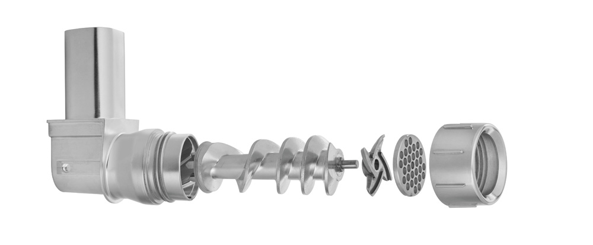- 3 решетки: 2,5 мм, 4 мм, 7 мм
- Металлический загрузочный лоток
- Толкатель
- Инструмент для откручивания фиксатора решётки
- Инструмент для очистки решётки
- Инструкция на русском языке
- Гарантийный талон